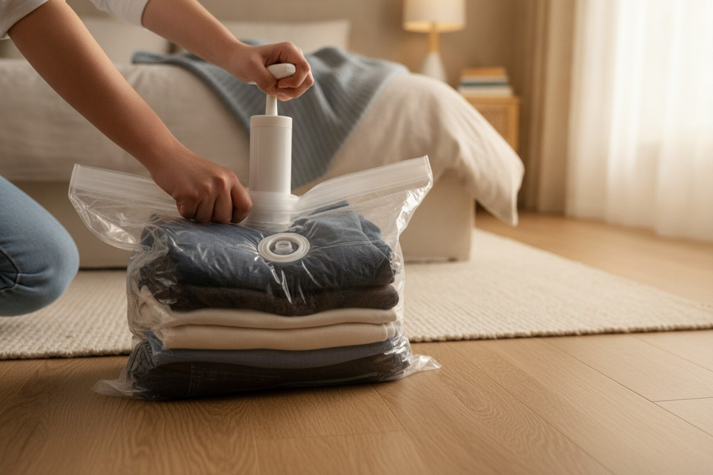
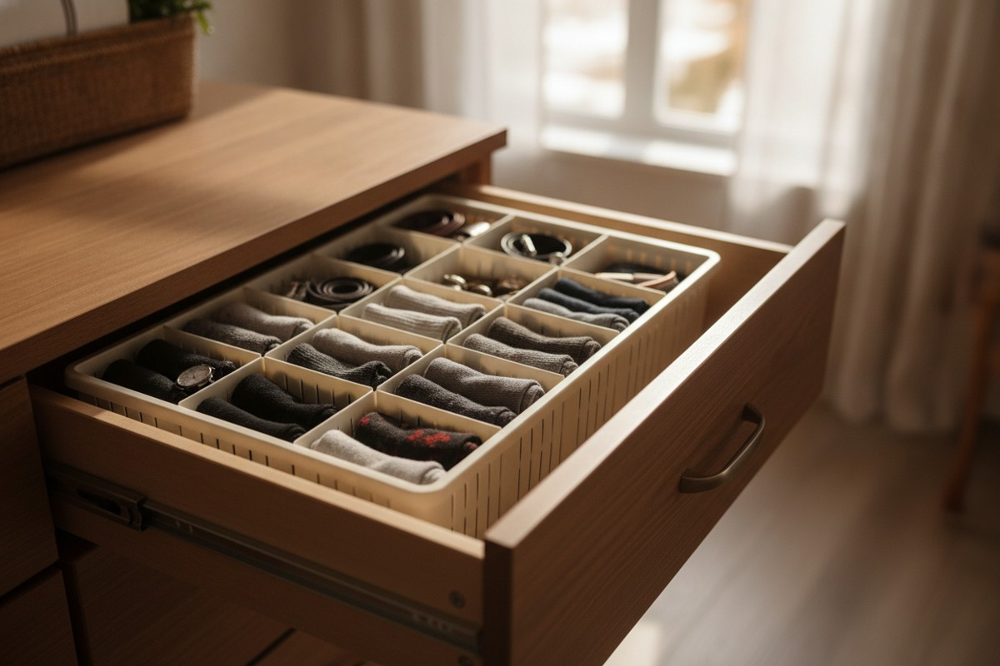
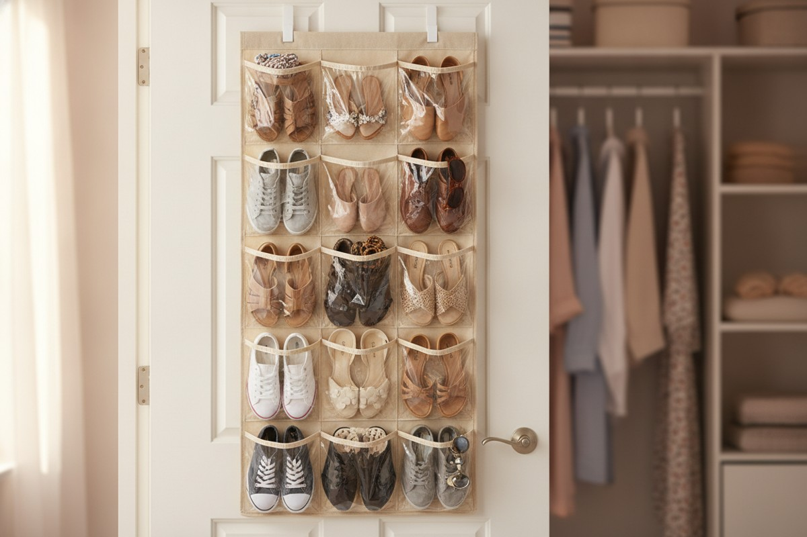
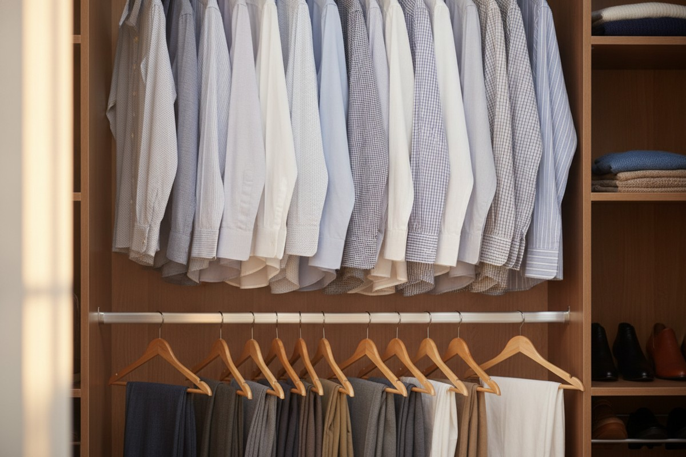
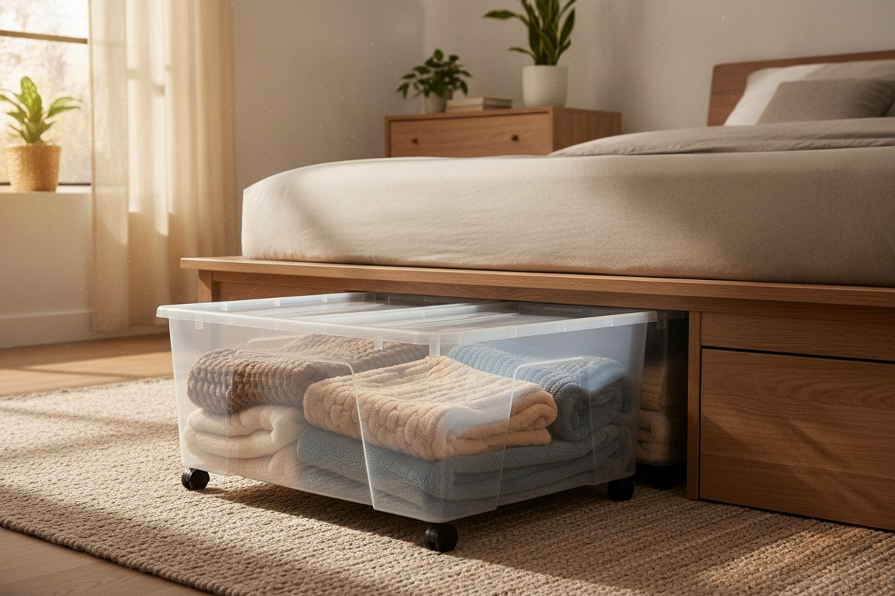
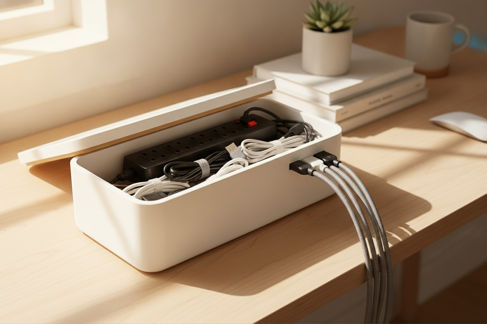

#ad Links on this page are affiliate links: we earn a commission if you buy, at no extra cost to you. As an Amazon Associate I earn from qualifying purchases.
More Gift guide
Home organization gifts Storage and organizing gear looks the same across price points in a photo. These are the specs that actually decide whether it gets used after the first week.
We have not tested these products. This page is a buying filter, not a
review: it tells you which specs decide whether the gear works, so you can judge any listing -
including ones we don't link.
AI-generated photo · generic example, not a specific product
01
Stackable clear storage bins
Clarity, then a rated stack height
What to check Clear (not frosted) plastic so contents are visible without opening the lid. A stated stack-load rating, not just "stackable" - that's what keeps a bottom bin from cracking. A lid that locks or snaps on all sides, not just two tabs. Skip it if Everything is already in matching bins from one set - mixing sizes undoes the point.
Search Amazon for stackable clear storage bins →
#ad · affiliate link

AI-generated photo · generic example, not a specific product
02
Vacuum storage bags
Valve type, then bag thickness
What to check A one-way valve rated for a specific pump or vacuum hose size. Stated bag thickness in microns - thin bags puncture on sharp zipper teeth. A double-zip seal track, which is the actual leak point on cheap versions. Skip it if The items are down/feather-filled - vacuum compression can damage the fill long-term.
Search Amazon for vacuum storage bags →
#ad · affiliate link

AI-generated photo · generic example, not a specific product
03
Adjustable drawer organizer
Expansion range, then material
What to check A stated expansion range in inches that actually matches the drawer, not just "adjustable". Bamboo or solid plastic dividers rather than thin mesh that sags under folded clothes. Divider height tall enough for what's going in it - socks need less than sweaters. Skip it if The drawer is an odd shape (corner unit, shallow pan) - a tray won't adjust to that.
Search Amazon for adjustable drawer organizer →
#ad · affiliate link

AI-generated photo · generic example, not a specific product
04
Over-the-door organizer
Weight-per-pocket, then hook depth
What to check A stated weight capacity per pocket, not just a total - one heavy item can tear a light pocket. Hook depth matched to the door thickness, so it doesn't block the door from closing. Clear pockets if it's for anything you need to find by sight. Skip it if The door swings into a tight space - check clearance before anything else.
Search Amazon for over-the-door organizer →
#ad · affiliate link

AI-generated photo · generic example, not a specific product
05
Closet double-hang rod
Load rating, then adjustable width
What to check A stated load rating in pounds for the rod itself, separate from the bracket rating. An adjustable width range that matches the closet, not a fixed size. Mounting hardware rated for the wall or closet material it's going into. Skip it if The closet rod is load-bearing from the original build - don't add a hanging unit to it without checking first.
Search Amazon for closet double-hang rod →
#ad · affiliate link
AI-generated photo · generic example, not a specific product
06
Label maker
Tape width options, then power source
What to check Multiple tape width options if labeling anything beyond standard bins (spice jars need a narrower tape than file folders). Battery life or a rechargeable port stated, not just "portable". A built-in font/size preview screen rather than a tiny one-line display. Skip it if It's a one-time project - a marker and painter's tape labels just as well for a single pass.
Search Amazon for label maker →
#ad · affiliate link

AI-generated photo · generic example, not a specific product
07
Underbed storage bins with wheels
Clearance height, then wheel type
What to check Measured clearance under the bed frame, compared with the bin's stated height - this is the #1 return reason. Wheel type: locking casters if the floor has any slope, plain wheels otherwise. A lid that latches, so pulling it out doesn't spill the contents. Skip it if The bed frame has drawers built in already - a rolling bin will just compete for the same space.
Search Amazon for underbed storage bins with wheels →
#ad · affiliate link
AI-generated photo · generic example, not a specific product
08
Pantry turntable / lazy susan
Diameter, then weight rating
What to check Diameter measured against the actual shelf depth, with room to spin without hitting the shelf above. A stated weight capacity - glass jars add up faster than it looks. A raised lip or divider if it's for loose bottles rather than boxed goods. Skip it if The shelf is too shallow for anything to spin freely - a stepped shelf riser is the better fit.
Search Amazon for pantry turntable / lazy susan →
#ad · affiliate link

AI-generated photo · generic example, not a specific product
09
Cable management box
Ventilation, then size for the power strip
What to check Ventilation slots or cutouts - an enclosed box with a power strip inside can trap heat. Interior dimensions checked against the actual power strip and brick sizes, not just "fits most". Cord entry points on the sides, not just the back, if it sits against a wall. Skip it if The setup already uses a cable sleeve or raceway that's working - don't add a second system on top.
Search Amazon for cable management box →
#ad · affiliate link